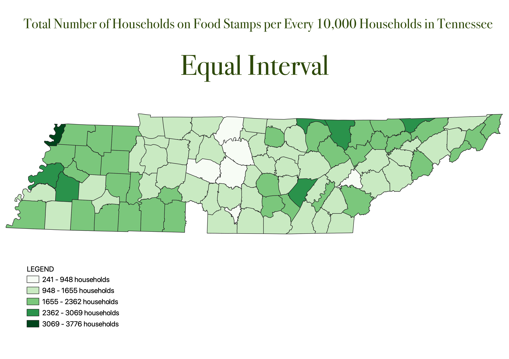
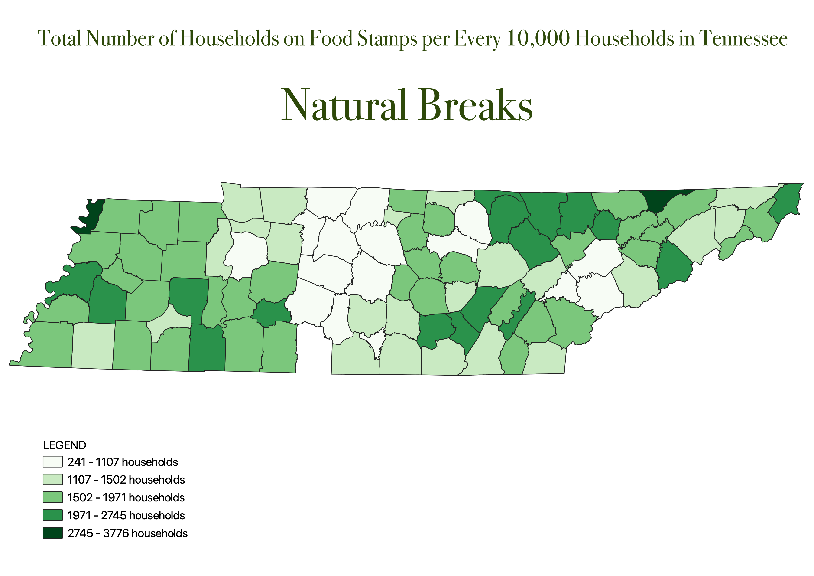
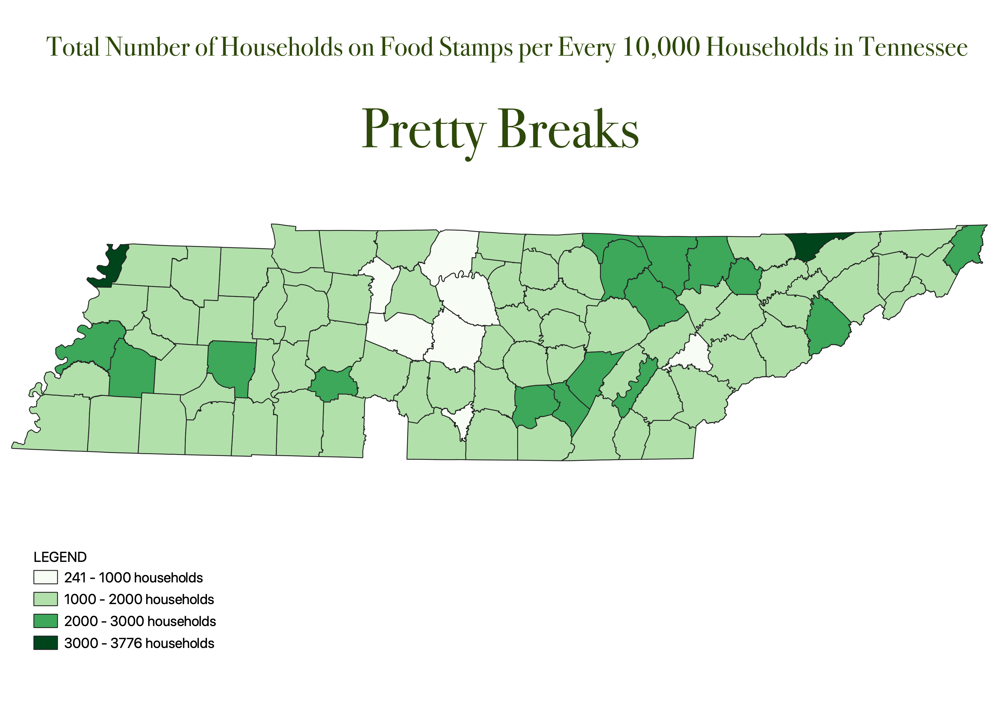

Homework 8: Census data ratios and categories
Lauren Coffey
The ratio I used was the number of households on food stamps divided by the total number of households in the county. Since the food stamp data was by households, I knew I could not divide by population. I then multipled this number by 10,000 to show an easier way to understand the ratio, making it X amount out of every 10,000 households. This gives a better reflection of what areas are recipients of food stamps, since it is proportional to the population so the areas that are more populated will not be the only areas with high numbers.

The pros of the equal interval is that it creates these "classes" of food stamp recipiency. This can be helpful as it helps to easily identify the top areas and the bottom areas without having to pay attention to single outliers, helping those who may not be as familiar with the type of data trying to be shown but just wants a rough idea. The cons of the equal interval are that it does not show outliers and since the intervals are equalized, there may not be any shown difference between counties that have a very large outlier or a very slight outlier since they are in the same interval.

The pros of the natural breaks method of categorization is that since these breaks account for outliers, it is easier to see which counties have a very high or very low number of recipients of food stamps. However, the cons are that it may be harder to interpret the data by just viewing the map, since the breaks can vary widely in their ranges.

The pros of using pretty breaks to categorize is in the name-- the breaks are prettier. Using this methods gives rounded breaks and makes the data appear more digestable to someone who wanted quick facts, like which counties have under 1,000 households on food stamps per every 10,000 households, instead of which counties have under 971, which is much less palatable. The cons are that the breaks may happen in points that do not actually exist. For example, since the map only highlights the counties in sets of 1,000 breaks, the 0-1000 counties could have 270 households or they could all have 999 and there would be no differentiation.